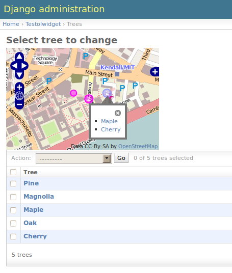

django-olwidget is a portable Django application that uses olwidget.js to easily create editable and informational maps using GeoDjango, inside and outside of Django’s admin.
A quick guide to the olwidget module contents:
And of course, customization of all types: options
Installation of the olwidget requires a couple of steps – these should be familiar to users of other reusable Django apps:
Install django-olwidget using your preferred method for python modules. The folder olwidget in the django-olwidget directory must end up in your python path. You could do this by copying or symlinking it into your path, or with:
python setup.py install
The preferred method is to install from using pip with virtualenv. The requirements file entry for the stable version:
django-olwidget
To use the development version, the requirements is:
-e git://github.com/yourcelf/olwidget.git#egg=django-olwidget
Copy or link the media/olwidget directory into to your project’s MEDIA_ROOT. If you wish to name the directory something other than olwidget, define OLWIDGET_MEDIA_URL with the URL for the media files in your settings file.
Include 'olwidget' in your project’s settings INSTALLED_APPS list.
(Optional) If you want to use Google, Yahoo or CloudMade map layers, you must include GOOGLE_API_KEY, YAHOO_APP_ID or CLOUDMADE_API_KEY in your settings file. olwidget uses an OpenStreetMaps layer by default, which requires no key.
olwidget includes a test project demonstrating some of the olwidget app’s functionality; this can be found in the django-olwidget/test_project directory. To use it, modify the settings.py directory to reflect your database settings. For convenience, a shell script, reset_testolwidget.sh, is included to set up the database using postgres, template_postgis,and the database user and password specified in the script.
olwidget defines several widget types. If all you need is a single-layer map, or if you want to display maps outside of the context of a form, this is what you want. EditableMap and InfoMap are single-layer widgets for editing or displaying map data. Map, EditableLayer, and InfoLayer are the widget counterparts to the fields above which make display of multi-layer maps outside of forms possible.
EditableMap is a widget type for editing single layers. Constructor:
olwidget.widgets.EditableMap(options=None, template=None)
An example form definition that uses an editable map:
from django import forms
from olwidget.widgets import EditableMap
class MyForm(forms.Form):
location = forms.CharField(widget=EditableMap())
In a template:
<head> {{ form.media }} </head>
<body>... {{ form }} ...</body>
InfoMap is used for displaying read-only single-layer maps with clickable information popups over geometries. Unlike the other types, you probably want to use this widget without a Form. Constructor:
olwidget.widgets.InfoMap(info, options=None, template=None)
An example info map:
from olwidget.widgets import InfoMap
map = InfoMap([
[mymodel.point, "<p>This is where I had my first kiss.</p>"],
[othermodel.polygon, "<p>This is my home town.</p>"],
[othermodel.point, {
'html': "<p>Special style for this point.</p>",
'style': {'fill_color': '#00FF00'},
}],
...
])
In a template:
<head> {{ map.media }} </head>
<body>... {{ map }} ...</body>
Use these widgets together to display multi-layer maps outside of forms.
Map constructor:
olwidget.widgets.Map(vector_layers=None, options=None, template=None, layer_names=None)
EditableLayer constructor:
olwidget.widgets.EditableLayer(options=None, template=None)
InfoLayer constructor:
olwidget.widgets.InfoLayer(info=None, options=None, template=None)
An example of a widget with two info layers:
mymap = Map([
InfoLayer([["POINT (0 0)", "the origin"]], {'name': 'origin'}),
InfoLayer([["POINT (1 0)", "one degree off"]], {'name': 'a bit off'}),
], { overlay_style: {'fill_color': '#ffffff'} })
In a template:
<head> ... {{ mymap.media }} ... </head>
<body> ... {{ mymap }} ... </body>
MapModelForm is an extension of the built-in ModelForm type which adds support for maps. MapModelForm subclasses can possess two extra parameters in their inner Meta class – an optional maps parameter which specifies which fields to use with which maps, and an options parameter that specifies global map options.
The following is a simple example using a separate map for each field, and the same appearance for all maps:
# models.py
class MyModel(models.Model):
geom1 = models.PointField()
geom2 = models.LineStringField()
geom3 = models.GeometryCollectionField()
# forms.py
from olwidget.forms import MapModelForm
from models import MyModel
class MyForm(MapModelForm):
class Meta:
model = MyModel
options = { 'layers': ['google.streets'] }
To edit multiple fields in a single map, specify the maps parameter. The following will construct a form with 2 maps, the first editing geom1 and geom2 fields and using Google Streets as a base layer, and the second editing geom3 and using default options:
class MyForm(MapModelForm):
class Meta:
model = MyModel
maps = (
(('geom1', 'geom2'), { 'layers': ['google.streets'] }),
(('geom3', ), None),
)
To define options for particular fields, override the field definition.
from olwidget.forms import MapModelForm
from olwidget.fields import EditableLayerField
class MyForm(MapModelForm):
geom1 = EditableLayerField({'overlay_style': { 'fill_color': "#ff0000" }})
class Meta:
model = MyModel
Using the form in a template is the same as before.
<head> {{ form.media }} </head>
<body> {{ form }} </body>
Multi-layer maps are possible in forms using the MapField type, which is a container field for any number of layer fields. The layer fields are EditableLayerField or InfoLayerField types, which allow editing or display of vector data on the map.
MapField constructor:
olwidget.fields.MapField(fields=None, options=None, layer_names=None, template=None)
The name of a custom template to render the map. It will receive the context:
{'id': html id for the map,
'layer_js': an array of javascript invocations from each layer,
'layer_html': an array of html data from each layer,
'map_opts': a JSON string of options for the map.
}
EditableLayerField constructor:
olwidget.fields.EditableLayerField(options=None)
InfoLayerField constructor:
olwidget.fields.InfoLayerField(info=None, options=None)
The following is an example that constructs a map widget with 3 fields, two of them editable. It uses both layer-specific options and global map options:
from django import forms
from olwidget.fields import MapField, EditableLayerField, InfoLayerField
class MyForm(forms.Form):
country = MapField([
EditableLayerField({'geometry': 'polygon', 'name': 'boundary'}),
EditableLayerField({'geometry': 'point', 'name': 'capital'}),
InfoLayerField([["Point (0 0)", "Of interest"]], {'name': "Points of interest"}),
], {
'overlay_style': {
'fill_color': '#00ff00',
},
})
In a template:
<head>... {{ form.media }} ...</head>
<body>... {{ form }} ...</body>
olwidget has several advantages over the built-in geodjango admin map implementation, including greater map customization, support for more geometry types, the ability to edit multiple fields using one map, and the option to include a map in admin changelist pages, on top of basic usability like undo/redo and the ability to delete individual vertices.
To use olwidget for admin, simply use olwidget.admin.GeoModelAdmin or a subclass of it as the ModelAdmin type for your model.
Example using olwidget in admin:
# admin.py
from django.contrib import admin
from olwidget.admin import GeoModelAdmin
from myapp import Restaurant, Owner
# Use the default map
admin.site.register(Restaurant, GeoModelAdmin)
# Customize the map
class MyGeoAdmin(GeoModelAdmin):
options = {
'layers': ['google.streets'],
'default_lat': 44,
'default_lon': -72,
}
admin.site.register(Owner, MyGeoAdmin)
To edit multiple fields using a single map, specify a maps parameter (with the same syntax as that used in MapModelForm) with a list of all geometry fields and which maps they should use and the options those maps should use, like so:
# model:
class Country(models.Model):
capital = models.PointField()
perimiter = models.PolygonField()
biggest_river = models.LineStringField()
# admin.py
class CountryAdmin(GeoModelAdmin):
options = {
default_lat: -72,
default_lon: 43,
}
maps = (
(('capital', 'perimiter'), { 'layers': ['google.streets'] }),
(('biggest_river',), {'overlay_style': {'stroke_color': "#0000ff"}}),
)
This will tell GeoModelAdmin to construct 2 maps, the first editing capital and perimiter fields, and the second editing biggest_river, with specific options for each map. Both maps will share the global options parameter, but can override it by specifying options.
To show a clickable map on the admin changelist page, use the list_map property to specify which fields to display in the changelist map:
# an example model:
class Tree(models.Model):
location = models.PointField()
root_spread = models.PolygonField()
# admin.py
from django.contrib import admin
from olwidget.admin import GeoModelAdmin
from myapp import Tree
class TreeGeoAdmin(GeoModelAdmin):
list_map = ['location']
admin.site.register(Tree, TreeGeoAdmin)
Options can be set for the changelist map using the list_map_options property:
class TreeGeoAdmin(GeoModelAdmin):
list_map = ['location']
list_map_options = {
# group nearby points into clusters
'cluster': True,
'cluster_display': 'list',
}
This results in a map like this:
Maps are both important user interface elements, and powerful persuasive data displays. Consequently, it is necessary to support a high degree of customization around the appearance of a map. olwidget does this primarily through the use of OpenLayers’ style framework. All of olwidget‘s types accept an optional options dict which controls the appearance of the map and layers.
Layers inherit their styles from both their default parameters, and from those specified for a map:
default layer options < map options < layer options
By contrast, maps only inherit from their default options, and not from layers:
default map options < map options
This allows the map to hold defaults for all layers, but let the layers override them. The following is a list of all available options. Some are specific to map display, and others specific to layer display.
A list of map base layers to include. Choices include:
Remember to include GOOGLE_API_KEY, YAHOO_APP_ID, or CLOUDMADE_API_KEY in your settings.py if you use any of those layers.
A dict containing options for the OpenLayers Map constructor. Properties may include:
Any additional parameters available to the OpenLayers.Map.Constructor may be included, and will be passed directly.
The direction from the clicked geometry that a popup will extend. This may be one of:
Layer options can also be specified at the map level. Any options passed to a layer override the corresponding options from the map.
A dict of style definitions for the geometry overlays. For more on overlay styling, consult the OpenLayers styling documentation. Options include:
The way HTML from clustered points is handled.